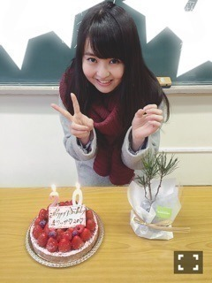
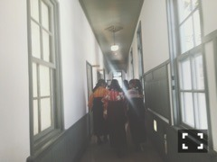

| 2016/03 13 Sun | 明日はそれ以上。701 回目 |
福島県会津若松市 會津風雅堂で行われた
明日へコンサート2016で
悲しみの忘れ方を歌いました。
微力ながらも乃木坂46一メンバーとして、
人前に出られる場にいるのだから、
誰かの活力になりたいです。
募金のご協力、
ありがとうございました。
...
一昨日はCDTVスペシャルフェスでした！
6曲のセットリスト、
がっつりライブができて
本当に嬉しかった、、有難い。
今、いっぱい身体を動かしたい気分です。
ずっと踊ってたいくらいだ！！！
見学に来てたねるちゃん。
話したの2回目でした、、
前より長く話せた
サイレントマジョリティー
めちゃくちゃかっこよかった！
MV一足早く見せていただきましたが、
さすが坂道シリーズ＼(^o^)／
グアムのホテル一緒だった玲香すん
日本寒い

若〜今度いつ撮ろうか＼(^o^)／
14th特典映像の個人PV公開〜
頃安祐良×伊藤万理華 『20』

二十歳になる6日前の14日に撮影しました。
監督から苔いただきました。
ありがとうございます！
冬に走るのは気持ちが良いです。
撮影はやっぱり好きです。
愛溢れる現場でした！楽しい！
Type-C収録、よろしくお願い致します！

ハルジオンの袴の雰囲気好きだったな

どうしても犬が抜けない、、
まりか
コメント(305)
2016/03/13 12:42